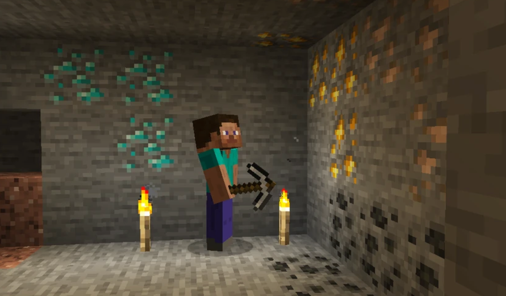
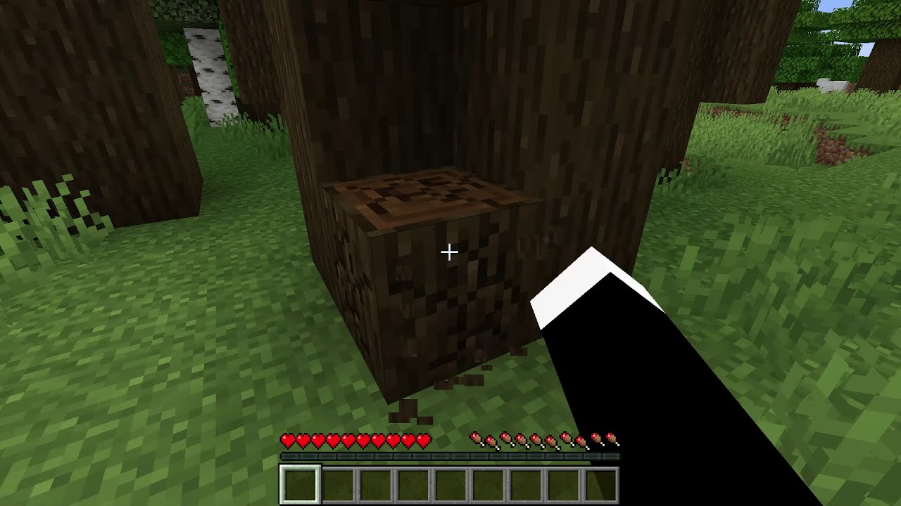
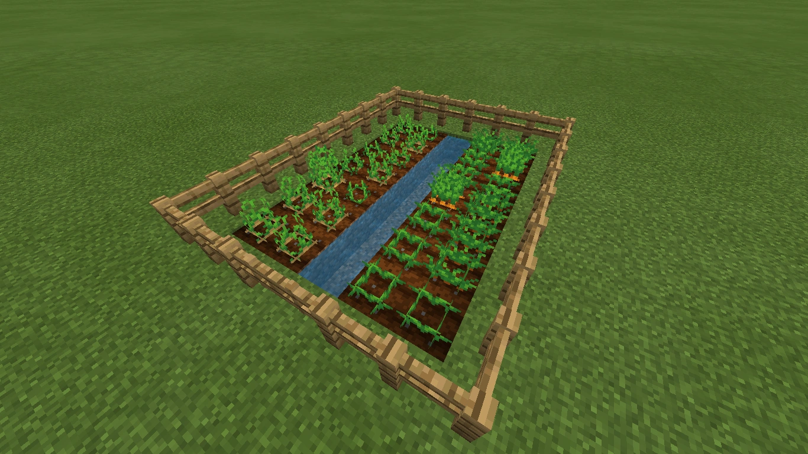

Raccolta Risorse
La raccolta di risorse è fondamentale per sopravvivere e costruire nel mondo di Minecraft.
Raccolta Mineraria
Scava nelle profondità per trovare minerali preziosi come ferro, oro, diamante, e redstone. Usa picconi appropriati per ottenere i materiali.
- Usa il piccone di pietra o superiore per minerali
- Evita di cadere in lava mentre scavi
- Organizza le risorse in casse


Raccolta Legno
Il legno è una delle prime risorse da raccogliere. Taglia alberi usando l'ascia o anche a mano, e raccogli tronchi, foglie e rami.
Raccolta Agricola
Coltiva piante per avere cibo e materiali. Pianta semi, annaffia e raccogli per non rimanere senza risorse.
